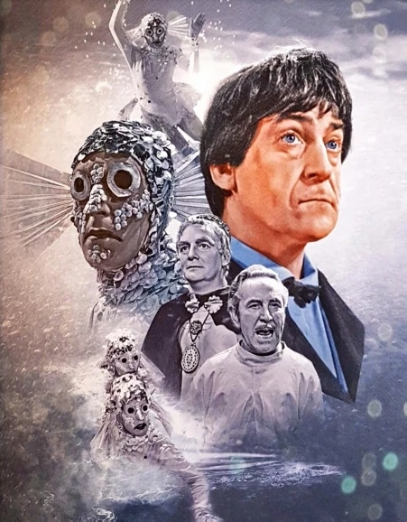

Эра Второго Доктора (4 сезон)
<<< НАЗАД ||| 5. Подводная угроза ||| ДАЛЬШЕ >>>
+ Реконструкция (эпизоды 1, 4) Субтитры: Русские и Английские |  |
|---|---|
+ Фанатская CGI анимация (эпизоды 1, 4) WhoRecons Субтитры: отсутствуют | |
+ Черно-белая анимация в соотношении сторон 4:3 (эпизоды 1, 4) Субтитры: отсутствуют | |
Субтитры: отсутствуют | |
эп.1 - Отрывок- Начало (MaddoxProductions1)
14 января - 4 февраля 1967
4 эпизода по 25 мин.
| Сохранился 3-й эпизод - 16mm t/r 2-й эпизод найден в 2011 г. - 16mm t/r * Имеется реконструкция утерянных 1 и 4 эпизодов * Имеется официальная ч/б и цветная анимация всех эпизодов |
|---|
 |  |  |
«Подводная угроза» — путешествие в руины Атлантиды: ТАРДИС приземляется на пустынном острове, а Доктор с друзьями оказывается в глубинах моря, среди рушащихся залов и людей‑рыб, где каждый шаг грозит предательством; над городом нависает безумный план профессора Зарова — перекроить океаны и уничтожить мир, а Второй Доктор балансирует между хитростью и отчаянием, пытаясь остановить катастрофу, пока вода смывает последние надежды на спасение. Тон истории — душный и тревожный, будто сам океан затаил дыхание перед ударом волны.
VHS - ноябрь 1998 | LC recon - август 2005 |
|---|---|
DVD - 26 октября 2015 |  Blu-ray (Анимация) - 13 ноября 2023 * Версия в нашей группе |


